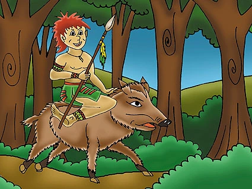

A Lenda Do Curupira
Conta-se que o Curupira é o protetor dos animais e das plantas, um espírito travesso que ao mesmo tempo castiga os caçadores inescrupulosos e guia os viajantes perdidos de volta ao caminho seguro. Seus pés virados para trás confundem aqueles que tentam segui-lo, protegendo assim os segredos da floresta contra aqueles que não respeitam suas leis.
Em uma noite de lua cheia, o jovem indígena Tainá se aventurou além da aldeia em busca de ervas medicinais para sua avó doente. Enquanto caminhava pela trilha estreita e escura, ele ouviu um riso infantil ecoando entre as árvores. Curioso, Tainá seguiu o som até encontrar uma pequena figura de cabelos vermelhos sentada sobre uma raiz grossa, observando-o com olhos brilhantes.
O Curupira, ciente da intenção pura de Tainá, decidiu guiá-lo através das sendas sinuosas da floresta, alertando-o sobre perigos invisíveis e revelando os segredos das plantas medicinais escondidas no coração da mata. Com paciência e sabedoria, o Curupira ensinou a Tainá a importância de respeitar a natureza, de colher apenas o necessário e de preservar o equilíbrio delicado entre homem e ambiente.
Ao amanhecer, quando os primeiros raios de sol douraram as copas das árvores, o Curupira desapareceu misteriosamente entre as sombras da floresta. Tainá retornou à sua aldeia com um feixe de ervas curativas, mas também com uma nova compreensão do mundo ao seu redor e um respeito renovado pelas histórias que ouvira sobre o Curupira desde criança.

Desde então, Tainá se tornou um guardião da floresta, compartilhando as lições que aprendera com o Curupira e garantindo que a sabedoria ancestral da Amazônia continuasse a ser preservada por muitas gerações. A lenda do Curupira viveu através das histórias contadas ao redor do fogo nas noites escuras da floresta, lembrando a todos que a natureza possui seus próprios guardiões, cujo respeito é essencial para a harmonia entre homem e ambiente.
Voltar A Seleção De Histórias
Jorge Vinicius Rocha Cantarinho 2°L